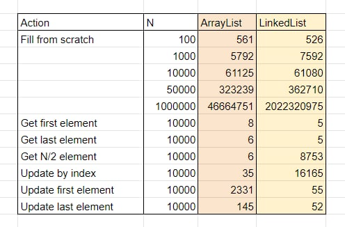

В сердце ArrayList лежит массив:
Размер массива задаётся в конструкторе: new ArrayList(50). Значение по умолчанию — пустой массив.
Структура LinkedList чуть сложнее. Каждый элемент оборачивается в класс:
private static class Node {
E item;
Node next;
Node prev;
}
Т.е сам элемент списка + указатели на следующий и предыдущий элемент.
В объекте LinkedList хранится ссылка на первый и последний элемент списка:
Node first;
Node last;
ArrayList просто обращается по индексу массива.
LinkedList идёт долгим путём. Берёт элемент first идёт по ссылкам, пока не дойдёт до i-го элемента. Затем либо возвращает значение, либо обновляет.
Кажется, что второй подход гораздо дольше. И это правда!
Чтобы получить 5000-ый элемент в списке из 10к элементов ArrayList тратит 6 наносекунд, а LinkedList — 8750. Чем больше элементов, тем больше разница.
ArrayList
Допустим, для списка [X][X][X][X] вызвали метод add(2, [O])
Создаётся новый массив размером +1:
[_][_][_][_][_]
Все элементы старого списка копируются туда так, чтобы образовалось свободное место для нового элемента:
[X][X][_][X][X]
Обновляем элемент:
[X][X][O][X][X]
LinkedList
Рассмотрим тот же метод add(2, [O]):
Само добавление простое, но перед ним нужно пройтись по списку. Это долго, поэтому LinkedList и здесь проигрывает по скорости.
List<Integer> list = new ArrayList<>();
for (int i = 0; i < 50_000; i++) {
list.add()
}
List<Integer> list = new LinkedList<>();
for (int i = 0; i < 50_000; i++) {
list.add()
}
Вопрос: какой код выполниться быстрее?
ArrayList
LinkedList
У текущего tail элемента обновляется ссылка next. Новый объект записывается как tail.
Что работает быстрее?
Интуиция подсказывает, что LinkedList, так как для ArrayList нужно часто переносить элементы в новый массив. На самом деле операции копирования выполняются быстро, так как элементы лежат в памяти рядом, а у процессоров хорошая поддержка этой операции.
Бенчмарки показывают, что до 100к элементов разницы нет, а потом побеждает ArrayList. А при миллионе элементов ArrayList копируется реже и в итоге заполняется в два раза быстрее.
Внизу таблица JMH бенчмарков с моего компьютера. На других железках результаты могут отличаться.

Ответ на вопрос: для 50к элементов время почти одинаковое.